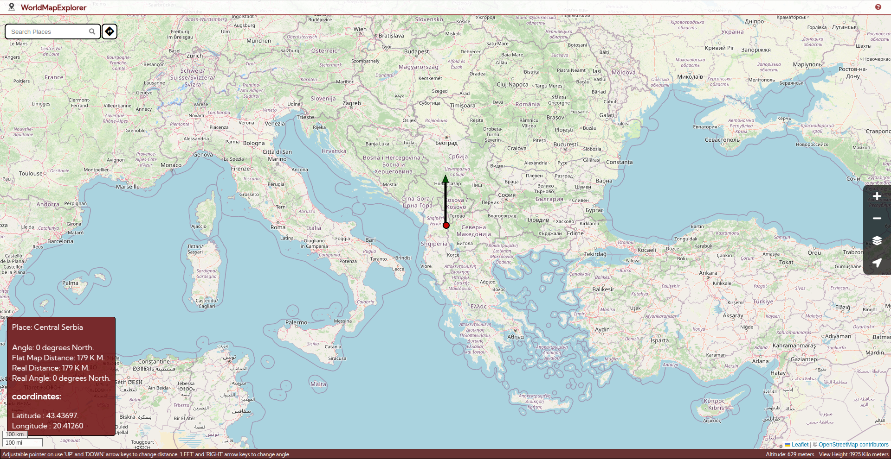

Welcome to World-Map-Explorer, an inclusive and educational mapping tool designed for both visually impaired and sighted users powered by OpenStreetMap. This manual provides an overview of the application’s key features, ensuring that you have a seamless and engaging experience while exploring the world.
Type map.zendalona.com at the address bar on any browser to open the application (Press Alt + D to focus on address bar).
A description of the app with basic details window will appear. This include some desclaimers and basic controls such as how to turn on focus mode, how to focus on map
and how to access help screen which contain all the keys and their use.After going through these, close the window by using tab key to focus on the close button and pressing enter.
You will hear a sound indicating the loading of the map. Press Alt + m to focus on the map. After focusing on the map, turn on focus mode on your screen reader. The method to turn this on may vary depending on the screen reader. When focus mode is on, you can use keyboard and explore the world.
Use Alt + K to hear all the keys and their functions.
Our global search feature lets you search any location with ease. Get information about countries, states, rivers, historical monuments and more.
Press Alt + S to focus on search bar. Type the name of any place, river, state, country or even historic monuments. Press Enter and choose a result from the list. Choose more results to explore even
more options. The informations regarding the search will be displayed and announced. If you want to access the information one by one, use tab key to enter the information box and explore the
results using arrow keys. If you search for an area(with boundaries) such as a country, the region will the selected. The navigation will be limited within the borders of the selected place. This is to ensure
that you stay oriented while exploring a specific area.
To access information about the place, use tab key to access the information box. Then, use up and down arrow keys to switch through information. Press Alt + M to focus on map and continue navigation.(Note that this mode of navigation is limited within the selected place).
Press Escape to close this selection and continue normal navigation.
The map opens up with an cursor positioned on the your approximate location. Press alt + M to focus on the map. Turn on focus mode (The method to turn on focus mode varies depending on your screen reader.) and use arrow keys and keyboard shortcuts to navigate.
You will hear a sound on each arrow key press. When the cursor enters a water body, the sound of water splashing will be there. When you cross a border, you will hear a seperate sound and an announcement regarding the place you come from and the place you are about to enter. When the arrow key press stops for a second, the current location of the cursor will be announced.
You can infer several information while traversing using the following keys:
F to hear the cursor's current location.
Shift + Arrow Key to find out the distance to the border in the arrow key's direction from the current cursor's position.
D to hear the distance to the border in north and south direction.
D to hear the distance to the border east and west direction.
A to announce the altittude of cursor's current location.
Enter to select the cursor's location, highlighting it and showing more details on the left.
L to reset the cursor to your exact location. Note: You should enable location permission for the website.
Shift + F to get the exact coordinates of the cursor.
Z to learn the scale of distance traveled by the cursor with each key press (varies by zoom level and latitude).Zooming plays a crucial role in exploration. When you zoom in, the view shifts closer to the Earth's surface, reducing the area covered. This is ideal for exploring smaller regions, such as local authorities or neighborhoods. On the other hand, zooming out provides a broader perspective, making it suitable for viewing larger areas like states or entire countries. The level of zoom also affects the type of alerts you receive when crossing borders. At a closer zoom level, you'll be notified when crossing district boundaries. Zooming out slightly will trigger alerts only when you cross state (or provincial) borders. At the widest zoom level, alerts are limited to crossing international borders. It is like viewing a place from a helicoptor. When you zoom out, the helicoptor rises up and you can view a bigger area.
Zoom level also affects the distance the cursor moves in one arrow key press. If you zoom in, this distance will be decrease. On maximum zoom in, the cursor only travels around 1 kilometer on a sing arrow key press. When you are maximum zoomed out. the cursor moves approximately 500 kilometers (This distance can vary depending on the lattitude of the place). So, if you want to navigate a large distance, zooming out would help you reduce the number of key presses.
Press Z to hear the distance traveled by the cursor with each arrow key press (this varies by zoom level and latitude).
Inbound navigation helps you stay within a selected place(such as a country) when you want to explore a specific area.
It ensures that you don't cross the boundary of the selected place.
You can enter inbound navigation in two ways.
1. When you search for a place in the search bar, if that place has boundaries (that is the place is not a point on map such as Taj Mahal), the place gets selected. (Note that this does not work when you search for rivers).
2. While you navigate using arrow keys, when you press Enter, the current location of the cursor gets selected.
When you select an area, you will hear an announcement that inbound navigation that The area of selection depends on the current zoom level. That is, if you are zoomed in, only a small place like a local authority will be selected, but when you are zoomed out, the large area such as a country can be selected.
When you select a place, the cursor is moved to the centre of the selected place and the navigation is limited within the area. When a cursor reaches a boundary, you will be warned that a boundary is reached.
You can hear the information about this place by using tab key to get to the informaion bar and using arrow keys to switch between informations.
Press Alt + M to focus on the map again and continue navigation.
Note: Ensure you are focused on map and focus mode is on when using this feature. If you’re using another feature, press Alt + M to refocus. Press Escape to exit the boundary and continue exploring.
The adjustable pointer adds an innovative twist to exploring and comparing distances on the map. Imagine you hold stick in your hand. You can point it to whichever direction you want and adjust the distance it points to by moving your hand. Adjustable pointer is like a stick who's length can be changed. With the current location as the centre, you can point to a place that is situated at a distance same as the length of the pointer and at an angle of your choice. Instead of moving your hands, you can use arrow keys to adjust it's length and angle. The north is set as 0 degree and as you rotate clockwise, the angle changes. The east is 90 degree, south is 180 degree and west is 270 degree. In this way you can explore the surroundings of the cursor's location.
J to activate adjustable pointer. Use Up and Down arrows to change the length of the pointer
and Left and Right arrows to adjust the angle in which it points.
F to announce the details of the place pointed by the adjustable pointer.
Enter to move the cursor to the location pointed by the cursor and continue normal navigation from there.
J again to close adjustable pointer and continue normal navigation from where you stopped.
Note: Ensure you are focused on map and focus mode is on when using this feature.
The Distance Finder helps you calculate road distances between two locations (up to 1500 km). It provides both road distance and estimated travel time.
Press Control +Shift + D to open the distance finder panel. Use tab to focus on the text boxes of starting point and destination and input the places.
To select a place, type the name of the place and press Enter. This will bring the results based on your search. Select a place from the result and press enter to select it. You can select the cursor's current location as starting point or destination by pressing Alt + L.
Use tab key to focus of find distance button and press enter to announce the distance and time. The screen reader will announce the total road distance between the two points and the estimated time taken for the travel.
Note: These values may not be accurate.
Note: Press Escape to quickly close and return to exploring.
To know more www.zendalona.com/map
This application uses OpenStreetMap (OSM) data for map information. OSM is responsible for the maintenance and accuracy of the map